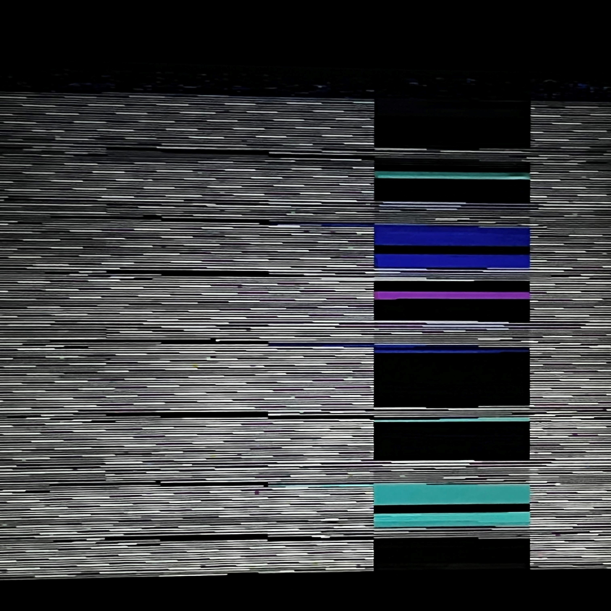
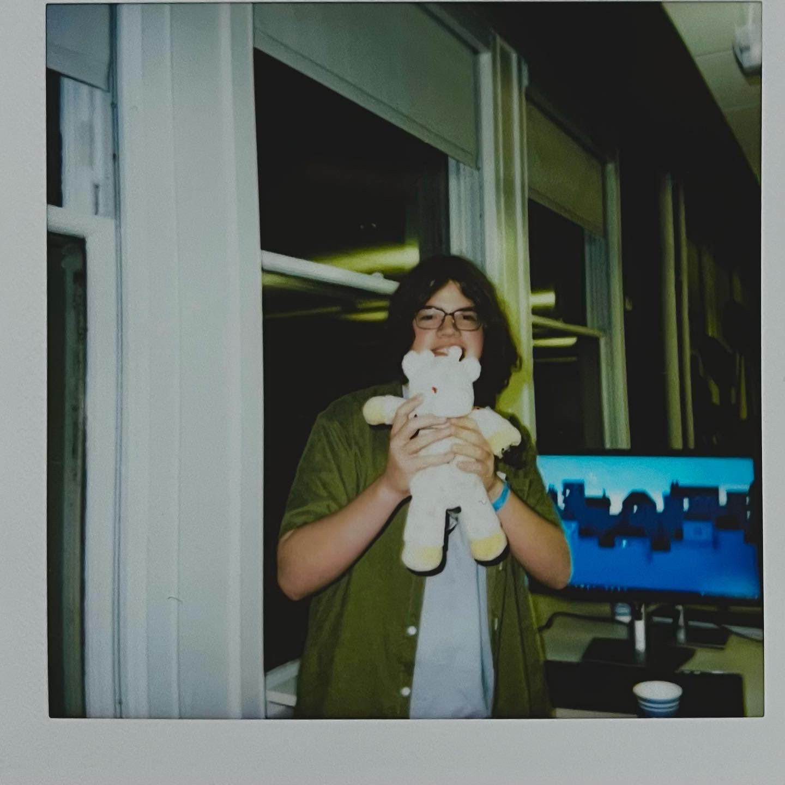
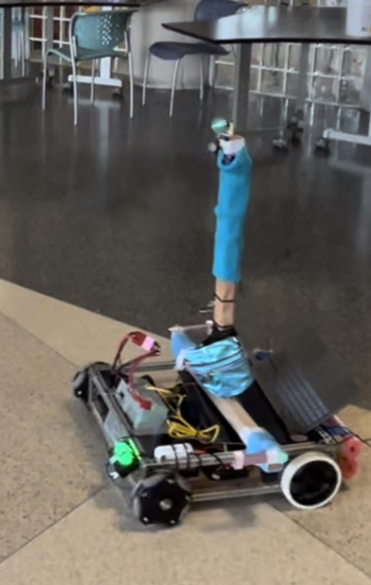
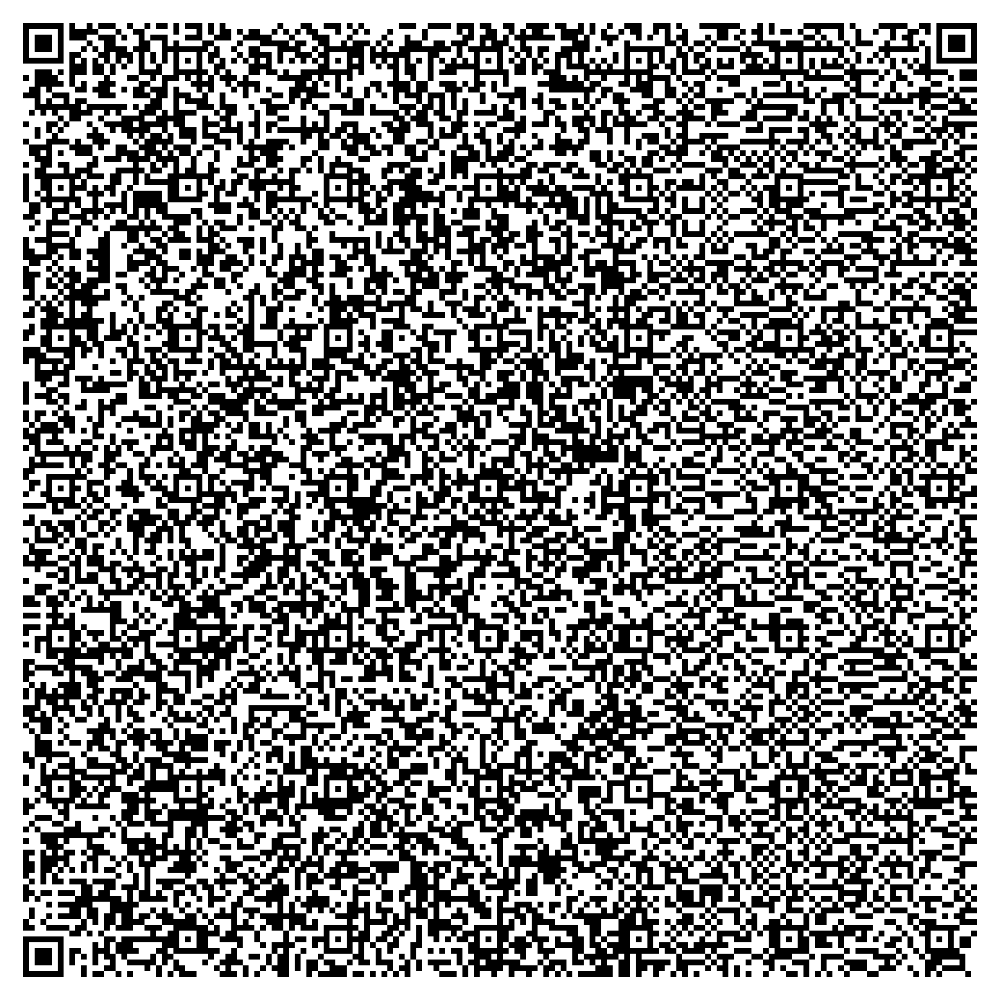

Verilog2Tetris | View it on GitHub
|  | Verilog2Tetris is a remake of the computer microarch course, Nand2Tetris, but in verilog. Implementing the project in Verilog for real hardware allows you to work with more advanced and more fun topics such as using SDRAM, interfacing with VGA, etc. |
Assemble Hackathon 2022 | View it on GitHub
|  | I received the opportunity to fly out to the Figma HQ in San Francisco to compete in the 2022 Assemble Hackathon from Hack Club. We created a keyboard stuffed animal with a typing game where you type using a joystick on a stuffed animal's arm. It received the Scrappy Award for jankiest project. |
CPS Office of CS Internship - DanceBot! | View it on GitHub
|  | Over the summer of 2022 interning with CPS Office of CS I helped to create the DanceBot! Using all FIRST robotics components, the robot was able to replicate the movement of other people's arms and head by tracking their movement with Google MediaPipe and then the robot would mirror the movements on its arms and legs made of 3D printed models and servo motors. |
KoalemOS | View it on GitHub

| Named after the Greek god of stupidity, KoalemOS is just what it sounds! Its a stupid little custom kerenel and OS for UEFI systems that makes it easier to see how your code interfaces with hardware directly. While it supports most modern systems the OS is more for messing around and learning about interacting directly with computer hardware. |
Logisim Evolution - LT Edition | View it on GitHub

| For my school's microarchitecture class we wanted to use Logisim Evolution for the Nand2Tetris course but it would not let you name things with certain names that overlap with keywords in some other hardware description languages. This made it so you couldn’t name things their correct name for Nand2Tetris making everything confusing. Because Logisim Evo is open source I was able to rebuild it without that annoying feature we didn’t need. |
QR OS | View it on GitHub
|  | QR OS is what happens when I get too much free time. Its an entire 16 bit legacy OS that compiles into a bin file that is small enough to be fit on a QR code. It has basic graphics and text functionality too! |
AstroTalk - VividHacks First Place 2021 | View it on GitHub
AstroTalk allowed you to upload audio files to a web service that would buffer them and play them on a radio I designed and built from scratch. The radio was equipped with a directional antenna and we definitely totally kept the power under legal limits and no HAM radio nerds caught us! This project won first place in the VividHacks annual online hackathon. |
Pong Assembled | View it on GitHub

| Pong Assembled is pond made entirely in NASM for DOS machines. It uses good ol' fashioned interrupts for everything from keyboard inputs to graphics! Heavily commented so its easy to use as a NASM workshop demo. |